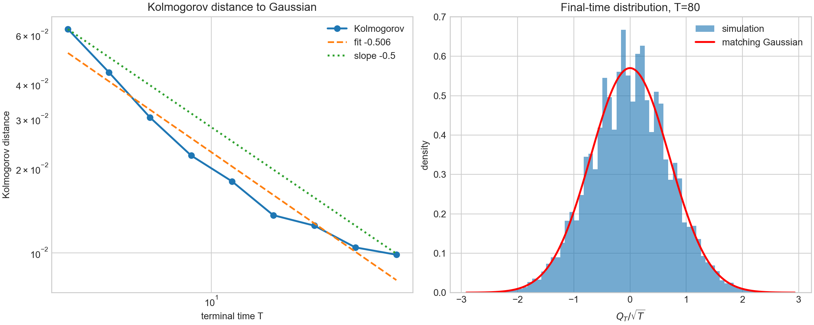

Academic Profile
My current mathematical interests center on stochastic processes, diffusion limits, quantitative convergence, partial differential equations, measure theory, and mathematical finance. My main research direction is finite-time error and quantitative convergence for self-diffusion limits in Metropolized Langevin dynamics.
Research
Current Research Project
Finite-Time Error in Self-Diffusion Limits
This project studies finite-time convergence rates for the self-diffusion limit in Metropolized Langevin dynamics. Starting from the weak convergence theorem to Brownian motion, I study how fast the rescaled displacement approaches its Gaussian limit in Kolmogorov distance. The main idea is to use a Poisson-equation/Itô decomposition to split the error into a bounded corrector term, an ergodic-average term, and a martingale CLT term. The current goal is to understand and numerically test the expected T-1/2 convergence rate.
Background: based on the self-diffusion problem for Metropolized Langevin dynamics studied by Fathi, Homman, and Stoltz.

Random Matrix Theory / ISMaRT
Haar Random Unitaries and Operator-Theoretic Questions
Reading and computational notes related to Haar random unitaries, matrix models, and operator-theoretic questions.
A Note on Haar Random Unitaries, Non-Normality, and Commutator Bounds
Notes on random unitary matrix models, non-normal behavior, and commutator lower bounds.
PDFClass Notes and Reading Notes
PDE
Notes and selected exercises from PDE, including transport, Laplace, heat, and wave equations.
Derivations of Solution Formulas for the Transport and Laplace Equations
Expository derivations of classical solution formulas for transport and Laplace equations.
PDFWave Equation: D'Alembert Formula and Circular Means
Expository notes on the wave equation, including D'Alembert's formula, circular means, the Euler-Poisson-Darboux equation, and energy equipartition.
PDFStochastic Processes and Stochastic Analysis
Notes on Markov processes, Brownian motion, Itô calculus, martingales, and diffusion generators.
Notes on Stochastic Dynamics and Real Analysis
Reading notes connecting stochastic dynamics with analytic background used in diffusion problems.
PDFThe Infinitesimal Generator of an Itô Diffusion
A step-by-step proof of the generator formula for Itô diffusions.
PDFMeasure Theory and Real Analysis
Selected notes and qualifying-exam style problems in measure theory and real analysis.
Selected Measure Theory Qualifying Exam Problems
Worked solutions to qualifying-exam style problems on outer measures, limiting outer measures, and open or closed sets of full measure.
PDFMathematical Finance
Expository notes connecting stochastic calculus, hedging arguments, and financial PDEs.
A Derivation of the Black-Scholes Equation via Hedging
A derivation of the Black-Scholes PDE from a hedging argument in a stochastic-calculus setting.
PDFMathematical Preparation
- Measure theory and real analysis: outer measure, Lebesgue integration, convergence theorems, Lp spaces
- Stochastic processes: Markov chains, martingales, Brownian motion, Itô calculus
- PDE: transport, Laplace, heat, wave equations, Sobolev-space background
- Random matrix theory: Haar unitaries, spectral methods, operator estimates
- Computational work: Python, NumPy, Matplotlib simulations for Langevin dynamics